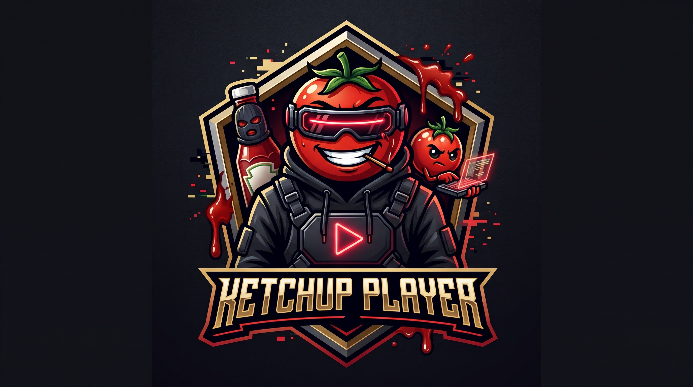

Tokeny z Palette.kt. Pełny zestaw ekranów poniżej jest w motywie Morskim; Home pokazujemy też w trzech pozostałych.
Morski
AatekstOKakcentnowość
Grafit
AatekstOKakcentnowość
Czerń
AatekstOKakcentnowość
Własny
AatekstOKakcentnowość
Tokeny z Palette.kt. Pełny zestaw ekranów poniżej jest w motywie Morskim; Home pokazujemy też w trzech pozostałych.

Wybierz sposób dodania dostawcy. Możesz dodać kolejne później w Ustawieniach.
Ten dostawca używa HTTP — login i hasło są przesyłane jawnie.
Katalog pojawi się, gdy skończymy import. Możesz pominąć VOD i wejść wcześniej.
Zespół urbanistów odkrywa pod nowym miastem ślad dawnej cywilizacji. Dwa zdania opisu, czytelne z kanapy.
▶ Oglądaj+ Moja listaSzczegółyZespół urbanistów odkrywa pod nowym miastem ślad dawnej cywilizacji. Dwa zdania opisu, czytelne z kanapy.
▶ Oglądaj+ Moja listaSzczegółyZespół urbanistów odkrywa pod nowym miastem ślad dawnej cywilizacji. Dwa zdania opisu, czytelne z kanapy.
▶ Oglądaj+ Moja listaSzczegółyZespół urbanistów odkrywa pod nowym miastem ślad dawnej cywilizacji. Dwa zdania opisu, czytelne z kanapy.
▶ Oglądaj+ Moja listaSzczegółyGoście studia rozmawiają o wydarzeniach dnia. Ten sam opis i godziny są na przewodniku i w odtwarzaczu.
Opis zaznaczonej audycji — ten sam program co na Na żywo i w odtwarzaczu (102 · 19:15–20:15).
Komisariat w nadmorskim mieście prowadzi sprawy, których nikt nie chce ruszać. Cztery linie opisu bez przewijania na 1080p — to ten sam serial co w Kontynuuj oglądanie (S2 E5 / tu wznawiamy S3 E2).
▶ Wznów S3 E2 · 14:05Od początkuZwiastun✓ Moja listaŹródła (3)Motywy v5 z Palette.kt: Morski (domyślny), Grafit, Czerń OLED i Własny (odcień 195°). Akcent osobno — zieleń tylko dla nowych odcinków.
Profil dziecięcy jest zablokowany. PIN ma 4–12 cyfr.
Dodaj filmy i seriale przyciskiem + Moja lista na szczegółach albo długim OK na plakacie.
Przeglądaj filmyKatalog i EPG pochodzą z pamięci podręcznej (EPG z 18:10). Sprawdź sieć albo VPN.
Spróbuj ponownieSzczegóły · NET-TIMEOUTKażdy fokusowalny element ma co najmniej dwa sygnały: skalę 1,08, obrys 4 px w kolorze akcentu i poświatę. Animacja ≤ 150 ms.
Zespół urbanistów odkrywa pod nowym miastem ślad dawnej cywilizacji. Dwa zdania opisu, czytelne z kanapy.
▶ Oglądaj+ Moja listaSzczegółyGoście studia rozmawiają o wydarzeniach dnia. Ten sam opis i godziny są na przewodniku i w odtwarzaczu.
Opis zaznaczonej audycji — ten sam program co na Na żywo i w odtwarzaczu (102 · 19:15–20:15).